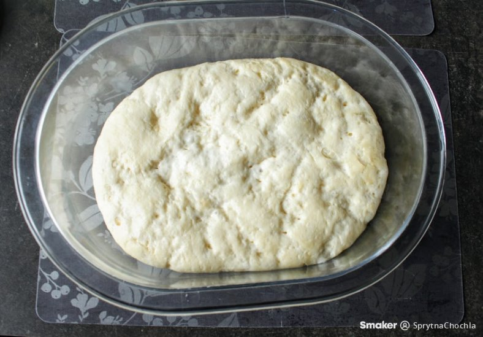

Pizza dough

Description
Pizza dough that rises for 24 hours in the fridge. How does it taste? Sensational. It is extremely fluffy and crispy.
Ingredients
- Wheat flour - 450g
- Warm water - 300ml
- Fresh yeast - 4g
- Sugar - 1/2 teaspoon
- Oil - 3 tbsp
- Salt - 1 level teaspoon
Directions
- Prepare the pizza dough at least 24 hours before baking. First make the leaven - mix yeast, sugar, 1 tablespoon of flour and 5 tablespoons of water.
Leave it to stand for about 10 minutes until it becomes very foamy. Combine the leaven with the remaining ingredients and knead into a dough.
If it sticks to your hands, add a little more flour. Put the dough into a container and place in the fridge for at least 24 hours. Remove 2 hours before
baking and leave at room temperature.
- Over 24 hours in the fridge, the dough will definitely increase in volume. After rising, divide the dough in half. On a semolina-floured board,
form a cake with a slightly higher edge. Spread the centre with tomato sauce, sprinkle with herbs and arrange your favourite toppings.
- Bake the pizza on a stone or in a pizza tin, on the highest oven temperature. It took 8 minutes to bake in mine because the dough was quite thick.
With a thin pizza, the time will certainly be reduced.
Main site